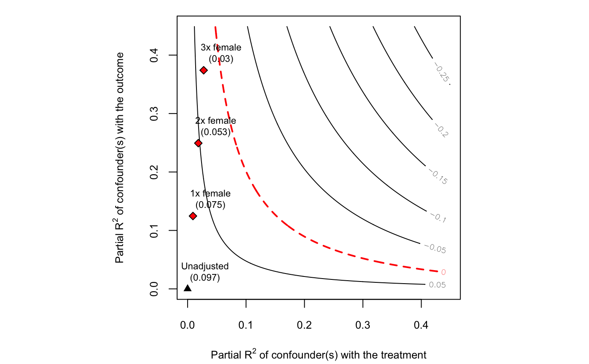

vignettes/sensemakr.Rmd
sensemakr.RmdUnder construction, come back soon!
library(sensemakr)
#> See details in:
#> Carlos Cinelli and Chad Hazlett (2020). Making Sense of Sensitivity: Extending Omitted Variable Bias. Journal of the Royal Statistical Society, Series B (Statistical Methodology).
# loads dataset
data("darfur")
# runs regression model
model <- lm(peacefactor ~ directlyharmed + age + farmer_dar + herder_dar +
pastvoted + hhsize_darfur + female + village, data = darfur)
# runs sensemakr for sensitivity analysis
sensitivity <- sensemakr(model, treatment = "directlyharmed",
benchmark_covariates = "female",
kd = 1:3)
plot(sensitivity)
| Outcome: peacefactor | ||||||
|---|---|---|---|---|---|---|
| Treatment | Est. | S.E. | t-value | \(R^2_{Y \sim D |{\bf X}}\) | \(RV_{q = 1}\) | \(RV_{q = 1, \alpha = 0.05}\) |
| directlyharmed | 0.097 | 0.023 | 4.184 | 2.2% | 13.9% | 7.6% |
| Note: df = 783; Bound ( 1x female ): \(R^2_{Y\sim Z| {\bf X}, D}\) = 12.5%, \(R^2_{D\sim Z| {\bf X} }\) = 0.9% | ||||||